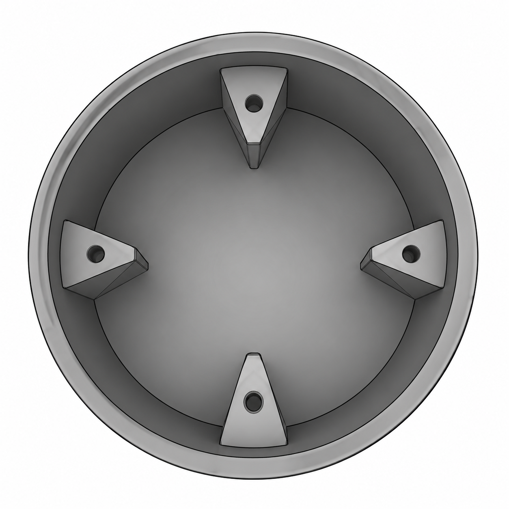
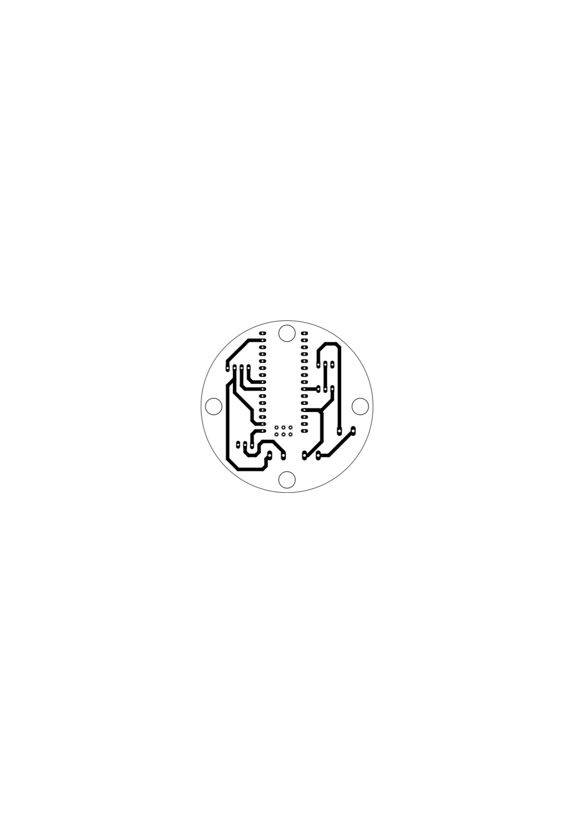
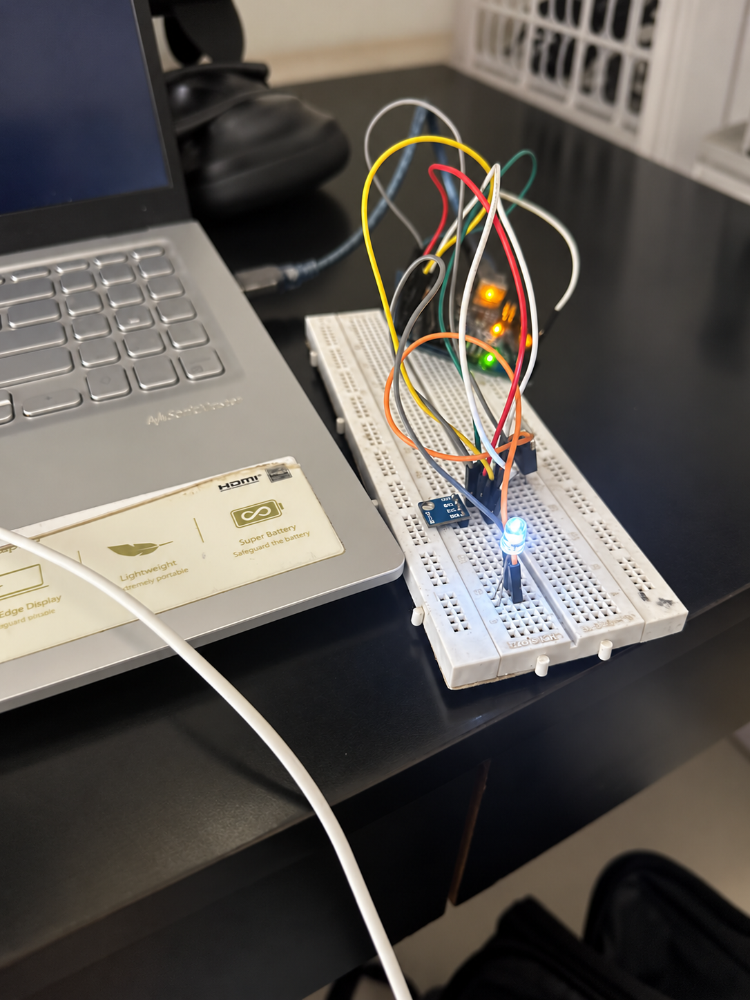
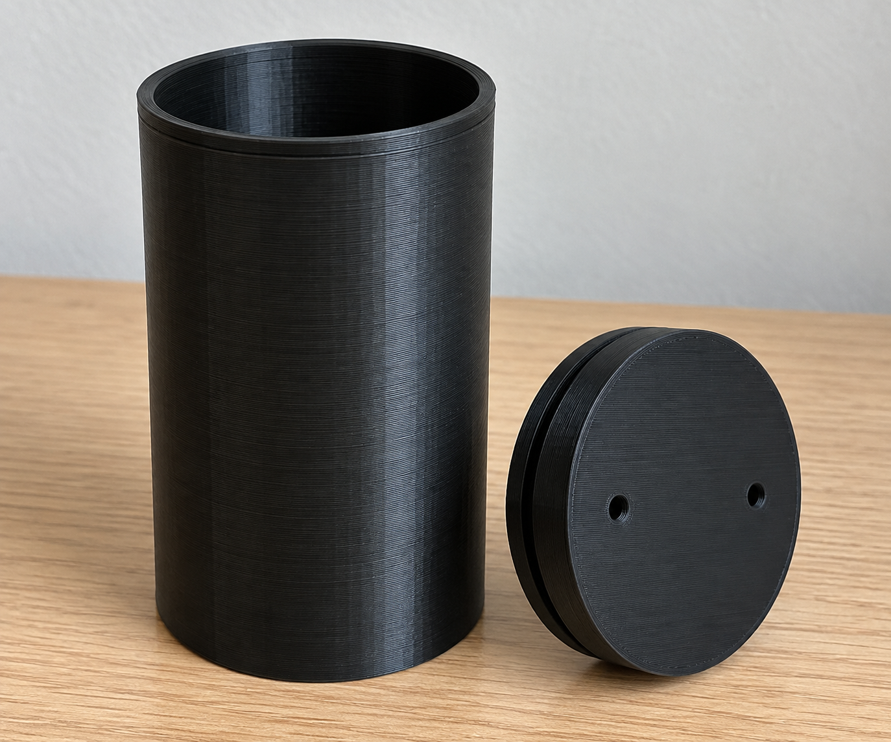

CanSat
A compact mechatronics system integrating mechanical design, sensor-based control, custom electronics, and automated parachute deployment.
Overview
I designed the CanSat as a compact mechatronics system that could package the electronics, payload, and recovery mechanism inside a structure roughly the size of a standard can. The project combined mechanical design, PCB packaging, barometric sensing, embedded control, and parachute deployment into one system.
My main challenge was not just fitting everything inside the enclosure. The structure had to remain easy to assemble and access, while the electronics needed to detect the deployment condition and trigger the recovery system automatically.
Designing Around the Internal Hardware
I started with the mechanical architecture in CAD. Because the available volume was extremely limited, I designed the enclosure around the PCB and payload rather than treating them as components to fit afterward.
Internal grooves were added to guide and locate the PCB inside the body while keeping the remaining volume available for payload. This gave the electronics a defined mounting position without consuming unnecessary internal space or requiring a separate support structure.
I also made the top section removable so the PCB and payload could be accessed without disassembling the entire CanSat. This made installation, wiring changes, testing, and later troubleshooting significantly easier.


The recovery system also had to be designed into the enclosure from the beginning. Attachment holes were incorporated near the upper portion of the structure so the parachute could connect directly to the CanSat while remaining positioned above the body during deployment.
Packaging the parachute, electronics, payload, and attachment points together meant the mechanical design had to support both normal assembly and the forces associated with recovery.
Turning Atmospheric Pressure into a Deployment Command
Once the mechanical layout was established, I worked on the electronics required to make the recovery system autonomous.
A barometric pressure sensor was used to monitor atmospheric pressure. Instead of relying on manual activation, the Arduino continuously read the sensor and compared the measured value against a predefined pressure threshold corresponding to the desired deployment condition.
When that threshold was reached, the controller generated the command that would ultimately trigger the parachute-release mechanism.
Validating the Logic Before Connecting the Parachute
Before connecting the control system to the actual deployment hardware, I built the circuit on a breadboard and substituted an LED for the parachute actuator.
This gave me a simple and safe way to verify the full control sequence. The pressure sensor supplied the input, the Arduino evaluated the threshold, and the LED represented the deployment command. When the programmed condition was met, the LED switched on and confirmed that the controller was responding correctly.

Testing the logic this way separated the software and sensor validation from the mechanical deployment system. If the threshold or code behaved incorrectly, I could diagnose it without repeatedly operating the parachute mechanism.
Once the sensor-to-output sequence behaved as expected, the same control logic could be connected to the physical deployment hardware.
Integrating the Recovery System
The final system linked the mechanical and electrical parts of the project into one recovery sequence. The parachute sat above the CanSat and was connected through the attachment points built into the enclosure.
During operation, the CanSat monitored atmospheric pressure. When the programmed threshold was reached, the controller issued the deployment command and the parachute system opened to slow the descent and allow the CanSat to be recovered safely.

Outcome
The final design connected mechanical packaging, environmental sensing, embedded logic, and physical recovery into one compact system. The removable enclosure kept the payload and PCB accessible, internal grooves provided controlled electronics packaging, and the pressure-based control logic allowed deployment to occur without manual input.
The engineering sequence became: CAD packaging → PCB and payload integration → pressure sensing → threshold logic → breadboard validation → parachute deployment .
What made the project valuable was taking a simple recovery requirement and solving it across multiple engineering layers. The enclosure had to physically support the payload and parachute, the sensor had to detect the correct condition, the software had to make the deployment decision, and the electronics had to convert that decision into a physical response.